07. SimTalk และ Method
วัตถุประสงค์การเรียนรู้
- สร้าง Method เขียน SimTalk 2.0 (print · var · if · for) แล้วรันดูผลใน Console ได้
- ผูก Method กับ Entrance / Exit control ของ object และใช้ @ (ชิ้นงาน) กับ ? (object ที่เรียก) ได้
- ใช้ Method แยกทางด้วย Sensor ประกอบ / ถอดชิ้นงาน และปล่อยงานด้วย OrderParts ได้
- ทำ Job Shop ที่อ่านเวลาและเส้นทางจากตาราง ด้วย Method ตัวเดียวใช้กับทุกเครื่องได้
07_Sim-Talk.spp — บันทึกจาก Plant Simulation 2606 (เปิดในเวอร์ชันเก่ากว่าไม่ได้)
· เปิดไฟล์แล้วดับเบิลคลิก Frame ใน Class Library › Models
บท 01–06 ตั้งค่าทุกอย่างในหน้าต่างของ object บทนี้เขียนโค้ด
SimTalk 2.0 ใน Method เมื่อหน้าต่างทำไม่ได้ — 8 ขั้น จาก print "Hello"
ไปจนถึง Job Shop 3 เครื่องที่อ่านเวลาและเส้นทางจากตาราง คุมด้วย Method 2 ตัว
ทุกตัวเลขในหน้านี้วัดจาก Plant Simulation 2606 ด้วยไฟล์บทเรียน และโค้ดทุกบรรทัดคือโค้ดจริงในไฟล์
07_Sim-Talk.spp
(Class Library › Models · Conveyor · Assembly · Worker) ·
ผลปลายบท: Job Shop 3 เครื่อง ใน 8 ชม. ได้ 117 งาน คุมด้วย Method 2 ตัว
ภาพรวม: 8 ขั้น จาก print "Hello" ถึง Job Shop จากตาราง
| ขั้น | เรื่อง | ทำอะไร |
|---|---|---|
| 1 | Method คืออะไร | ลาก Method จาก Toolbox ลง Frame |
| 2 | print · var · if · for | Run แล้วดูผลใน Console |
| 3 | Entrance / Exit control | @ = ชิ้นงาน · ? = object ที่เรียก |
| 4 | DataTable + reset | บันทึกทุกชิ้น 360 แถว |
| 5 | Conveyor แยกทาง | Sensor + Method + Checkbox |
| 6 | Assembly ด้วยโค้ด | create · cont.move · waituntil |
| 7 | Worker + OrderParts | 1 บรรทัด ปล่อยงานตามคำสั่ง |
| 8 | Job Shop จากตาราง | Method เดียว ใช้ 3 เครื่อง |
9 Frame ในไฟล์นี้ เรียงตามบทเรียน
| ลำดับ | Frame | เนื้อหา | ขั้นที่ |
|---|---|---|---|
| 01 | Model_Hello | Method แรก print · var · if · for | 1–2 |
| 02 | Model_InOut | Entrance / Exit control + DataTable + reset | 3–4 |
| 03 | Conveyor × 2 | Default เทียบ Method: Sensor แยกชิ้นงาน | 5 |
| 04 | Assembly × 2 | AssemblyStation เทียบ Method ประกอบ / ถอด | 6 |
| 05 | Worker × 2 | Default เทียบ OrderParts | 7 |
| 06 | Model_JobShop | ตาราง Job_Time · Job_Queue + Method 2 ตัว | 8 |
บท 07 ในตัวเลข: 9 Frame ในไฟล์ · 11 Method ในไฟล์ · 3 คู่ Default เทียบ Method · SimTalk รุ่น 2.0
_Default หรือ
_Object = ตั้งค่าในหน้าต่าง, ลงท้าย _Method = ใช้โค้ดขั้นที่ 1: Method คือโปรแกรมเล็ก ๆ ที่วางใน Frame
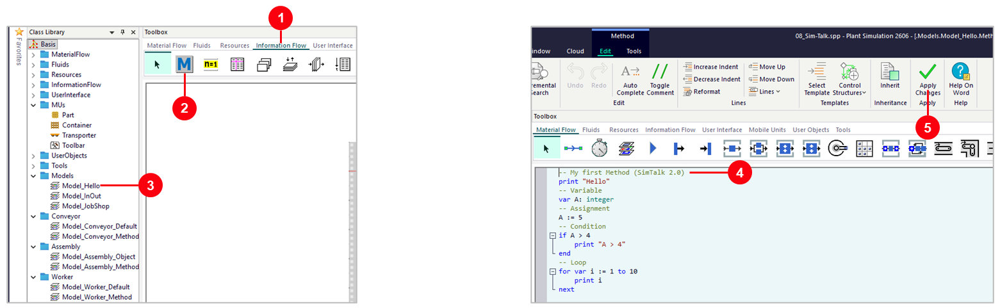
- 1
Information Flowแท็บใน Toolbox - 2
Methodลากไปปล่อยใน Frame แล้วตั้งชื่อ (ในไฟล์:Method_Hello) - 3
Models › Model_HelloFrame ของขั้นนี้ - 4ดับเบิลคลิก Method เปิด Editor แล้วพิมพ์โค้ด
- 5
Apply Changesบันทึกโค้ดเข้า Method (ทุกครั้งที่แก้)
โค้ดใน Method_Hello:
-- My first Method (SimTalk 2.0)
print "Hello"
-- Variable
var A: integer
-- Assignment
A := 5
-- Condition
if A > 4
print "A > 4"
end
-- Loop
for var i := 1 to 10
print i
nextขั้นที่ 2: print · var · if · for แล้ว Run ดูผลใน Console
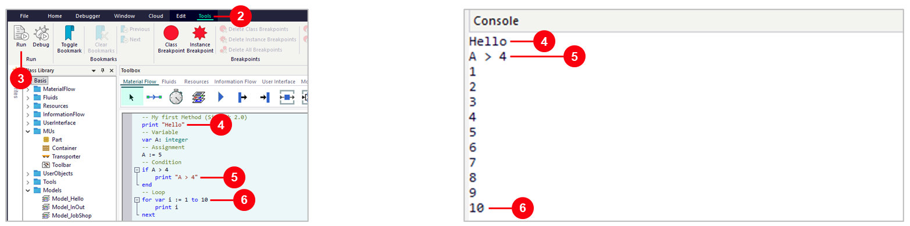
- 1
Window › Consoleเปิดหน้าต่าง Console ครั้งแรกครั้งเดียว - 2
Toolsแท็บของ Method Editor - 3
Runรัน Method นี้ทันที (ไม่ต้องรันโมเดล) - 4
print "Hello"→ Hello - 5
var A: integer·A := 5·if A > 4จริง → พิมพ์ A > 4 - 6
for var i := 1 to 10 … next→ พิมพ์ 1 ถึง 10
var ประกาศตัวแปร, := กำหนดค่า, if … end,
for var … next และไม่มี ; ท้ายบรรทัดสรุป syntax SimTalk 2.0 ที่ใช้ในบทนี้ (อ้างอิง)
| เรื่อง | SimTalk 2.0 | หมายเหตุ / ตัวอย่างในไฟล์ |
|---|---|---|
| Comment | -- หรือ // หรือ /* … */ | -- Customize MU L W H |
| ประกาศตัวแปร | var A: integer var b: object | integer · real · string · boolean · object · time |
| Parameter | param SensorID: integer, Front: boolean | Method ที่ Sensor เรียก (ขั้น 5) |
| กำหนดค่า | A := 5 x += 1 | เปรียบเทียบใช้ = ไม่เท่ากับใช้ /= |
| เงื่อนไข | if … elseif … else … end | then ใส่หรือไม่ใส่ก็ได้ |
| วนรอบ | for var i := 1 to 10 … next | while … end · repeat … until |
| รอ | wait 1 · waituntil Source_Box.Occupied | หยุด Method จนเวลาผ่าน / เงื่อนไขจริง (ขั้น 6) |
| หาร | / div (เอาส่วน) mod (เอาเศษ) | // ใน 2.0 คือ comment |
เจอโค้ดเก่า (SimTalk 1.0) แปลงเป็น 2.0 อย่างไร
| เรื่อง | SimTalk 1.0 (ตำรา / ตัวอย่างเก่า) | SimTalk 2.0 (PtS 2201 ขึ้นไป) |
|---|---|---|
| ส่วนหัว Method | is x: integer; do … end; | var x: integer ไม่มี is / do |
| ท้ายบรรทัด | statement; | ไม่ต้องมี ; |
| หารเอาส่วน / เศษ | // \\ | div mod |
| for loop | for i := 1 to 10 loop … next; | for var i := 1 to 10 … next |
| เลือกตามค่า | inspect x when … then … end; | switch x case … else … end |
| Comment | -- /* */ | -- // /* */ |
2.0 (New Syntax)
ในแท็บ Tools บอกรุ่นของ Editorขั้นที่ 3: Entrance / Exit control — object เรียก Method เอง
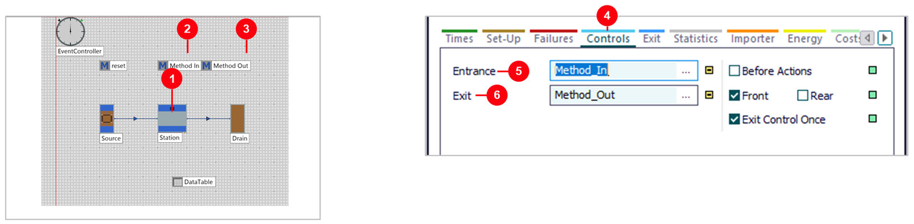
- 1
StationSource → Station → Drain ชิ้นงานทุก 10 วินาที - 2
Method_Inทำงานเมื่อชิ้นงานเข้า Station - 3
Method_Outทำงานเมื่อชิ้นงานพร้อมออก - 4แท็บ
Controlsของ Station (ดับเบิลคลิก Station) - 5
Entrance=Method_Inคลิก…แล้วเลือก Method หรือพิมพ์ชื่อ - 6
Exit=Method_OutFront☑ มีเครื่องหมายถูก (ทำงานตอนชิ้นงานถึงหัว Station)
ขั้นที่ 3 (ต่อ): @ คือชิ้นงาน ? คือ object ที่เรียก Method
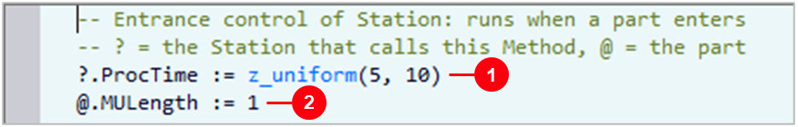
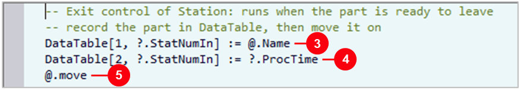
- 1
?.ProcTime := z_uniform(5, 10)?= Station · สุ่มเวลา 5–10 วินาทีให้ทุกชิ้น - 2
@.MULength := 1@= ชิ้นงานที่เข้ามา · ยาว 1 m - 3
DataTable[1, ?.StatNumIn]คอลัมน์ 1 แถว = ชิ้นที่เท่าไรของ Station - 4
DataTable[2, …] := ?.ProcTimeเวลาที่สุ่มได้ของชิ้นนี้ - 5
@.moveส่งชิ้นงานต่อ — ถ้าไม่มี ชิ้นงานค้างใน Station
Method_In (Entrance):
-- Entrance control of Station: runs when a part enters
-- ? = the Station that calls this Method, @ = the part
?.ProcTime := z_uniform(5, 10)
@.MULength := 1Method_Out (Exit):
-- Exit control of Station: runs when the part is ready to leave
-- record the part in DataTable, then move it on
DataTable[1, ?.StatNumIn] := @.Name
DataTable[2, ?.StatNumIn] := ?.ProcTime
@.move@ = ชิ้นงาน (MU) ที่ทำให้ Method ทำงาน · ? = object ที่เรียก Method ·
self = Method ตัวนี้เอง@.move ปิดท้ายเสมอขั้นที่ 4: ผล — DataTable บันทึกทุกชิ้น และ Method ชื่อ reset
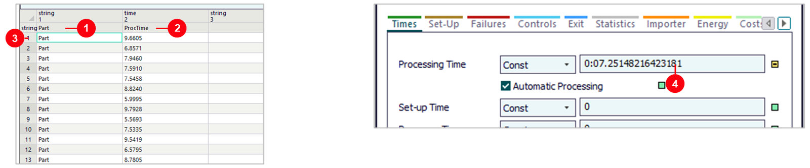
- 1
Partชื่อชิ้นงาน (คอลัมน์ 1 ชนิด string) - 2
ProcTimeเวลาที่สุ่มได้ (คอลัมน์ 2 ชนิด time) - 3แถว 1–360: 1 ชั่วโมงได้ 360 ชิ้น = 360 แถว
- 4
Processing Time0:07.25 ค่าที่Method_Inตั้งให้ชิ้นล่าสุด - 5Method ชื่อ
reset:DataTable.deleteกด Reset แล้วตารางว่าง (ชื่อ reset ทำงานเอง)
reset / init / endSim ใน Frame ทำงานเองเมื่อกด Reset /
เริ่มรัน / จบรัน ไม่ต้องผูกกับ object ใดขั้นที่ 5: แยกทางแบบไม่เขียนโค้ด — Exit Strategy
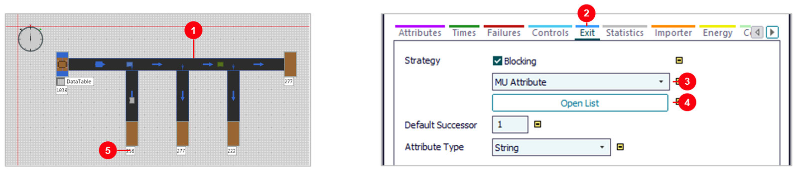
- 1
Conveyor(FrameConveyor › Model_Conveyor_Default) Source สุ่มชิ้นงาน 4 แบบ: Part, PartA, PartB, Box - 2แท็บ
Exitของ Conveyor - 3
MU Attributeเลือกทางออกตามค่าของชิ้นงาน (ชื่อ) - 4
Open Listกำหนดว่าชื่อไหนไปทางออกไหน - 5ผล 1 ชม.: DrainA 258 · DrainB 277 · DrainC 222 · Drain 277
ขั้นที่ 5 (ต่อ): แยกทางด้วย Sensor + Method_Control
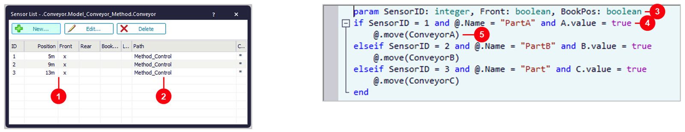
- 1Sensor 3 ตัว ที่ 5, 9, 13 m:
Conveyor › Controls › Sensors(FrameModel_Conveyor_Method) - 2
Path=Method_Controlทุก Sensor เรียก Method เดียวกัน - 3
param SensorIDโปรแกรมส่งเลข Sensor ที่ชิ้นงานผ่านมาให้ - 4Sensor 1 + ชื่อ PartA + A ☑ ทั้ง 3 เงื่อนไขจริง
- 5
@.move(ConveyorA)เลี้ยวเข้าทาง A · ไม่ตรงเงื่อนไข วิ่งตรงไป Drain
Method_Control:
param SensorID: integer, Front: boolean, BookPos: boolean
if SensorID = 1 and @.Name = "PartA" and A.value = true
@.move(ConveyorA)
elseif SensorID = 2 and @.Name = "PartB" and B.value = true
@.move(ConveyorB)
elseif SensorID = 3 and @.Name = "Part" and C.value = true
@.move(ConveyorC)
endA.value อ่านว่าช่อง A มีเครื่องหมายถูก ☑ หรือไม่
คลิกช่อง B ให้เครื่องหมายถูกหายไป ☐ ระหว่างรัน = ปิดทาง B ทันที · ผล 1 ชม.: A 321 · B 284 · C 294 · Drain 311ขั้นที่ 5 (ต่อ): Method สุ่มขนาดชิ้นงาน (Exit control ของ Source)
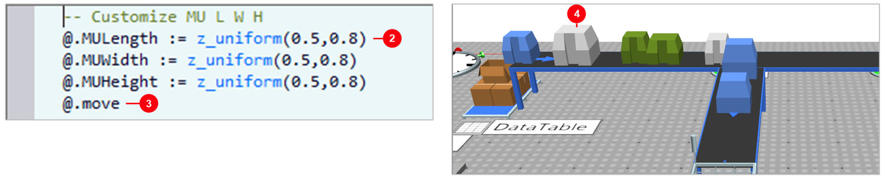
- 1
Source › Controls › Exit=Method_Custom_MUsทำงานตอนชิ้นงานออกจาก Source - 2
MULength·MUWidth·MUHeightสุ่ม 0.5–0.8 m ทุกชิ้น - 3
@.moveส่งต่อไป Conveyor - 4ภาพ 3D (หลังรัน 2 นาที): ชิ้นงานแต่ละชิ้นขนาดไม่เท่ากัน
Method_Custom_MUs:
-- Customize MU L W H
@.MULength := z_uniform(0.5,0.8)
@.MUWidth := z_uniform(0.5,0.8)
@.MUHeight := z_uniform(0.5,0.8)
@.moveMethod_Costom_MUs แก้ตัวสะกดเป็น Method_Custom_MUs ในไฟล์บทเรียน —
เปลี่ยนชื่อ Method แล้วต้องใส่ชื่อใหม่ในช่อง Exit ของ Source ด้วยขั้นที่ 6: ประกอบ / ถอดด้วย object (ไม่เขียนโค้ด)
- 1
Source·Source2·Source3ปล่อย PartA · PartB · Box - 2
AssemblyStationใส่ PartA + PartB ลงใน Box - 3
AssemblyStation2ใส่ Box 4 กล่อง ลงใน Container (Source4 ปล่อย 4 ใบ) - 4
DismantleStationเอา Box ออก · Container ไป Buffer2 - 5
DismantleStation2เอาชิ้นงานออกจาก Box → Buffer3 · Box → Buffer4 - 6ผล: Container 4 ใบ จบที่ 3:47 · ชิ้นงาน 32 · Box 16
Assembly › Model_Assembly_Object (ภาพที่ 1:40 นาที) — ในไฟล์บทเรียนตั้ง Buffer ให้รับได้ไม่จำกัด
(เดิม 8 ชิ้น พอเต็มแล้วโมเดลหยุดที่ 170 วินาที)ขั้นที่ 6 (ต่อ): ทำแบบเดียวกันด้วย Station ธรรมดา + Method 2 ตัว
- 1
Source_Boxปล่อย Box ทุก 5 วินาที · ไม่ต่อ Connector - 2
Station: Entrance =Method_AssemblyContainer เข้ามา → เติม Box 4 กล่อง - 3
Station2: Exit =Method_Dismantleถอดของออกก่อนปล่อย Container - 4
Buffer3·Buffer2·Bufferรับของที่ Method ย้ายมา (ไม่มี Connector) - 5
Drainรับ Container เปล่า (เพิ่มในไฟล์บทเรียน) - 6ผล: Container 3 ใบ จบที่ 1:28 · Buffer ละ 12 ชิ้น
ขั้นที่ 6 (ต่อ): โค้ด — create, cont.move, waituntil
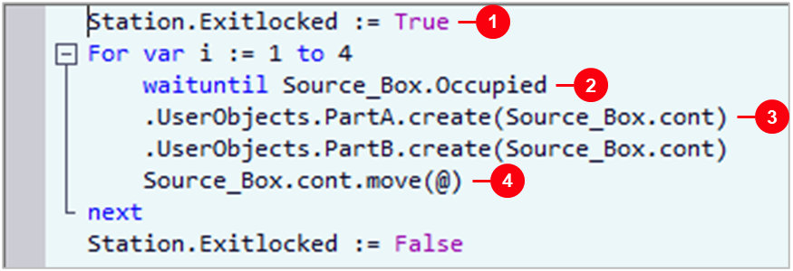
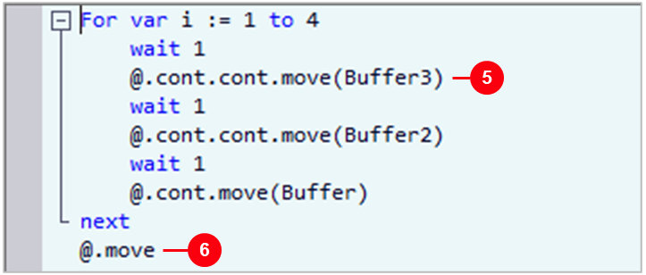
- 1
Exitlocked := Trueล็อกไม่ให้ Container ออกก่อนเติมเสร็จ (ท้าย Method ปลดล็อก) - 2
waituntil Source_Box.Occupiedหยุดรอจนมี Box - 3
PartA.create(Source_Box.cont)สร้างชิ้นงานใน Box (.cont= ของที่อยู่ข้างใน) - 4
Source_Box.cont.move(@)ย้าย Box ลง Container (@) · วน 4 รอบ - 5
@.cont.cont.move(Buffer3)ชิ้นงานใน Box ใน Container ·wait 1= ทีละ 1 วินาที - 6
@.moveส่ง Container เปล่าออก
Method_Assembly (Entrance ของ Station):
Station.Exitlocked := True
For var i := 1 to 4
waituntil Source_Box.Occupied
.UserObjects.PartA.create(Source_Box.cont)
.UserObjects.PartB.create(Source_Box.cont)
Source_Box.cont.move(@)
next
Station.Exitlocked := FalseMethod_Dismantle (Exit ของ Station2):
For var i := 1 to 4
wait 1
@.cont.cont.move(Buffer3)
wait 1
@.cont.cont.move(Buffer2)
wait 1
@.cont.move(Buffer)
next
@.move@.cont = MU ตัวแรกที่อยู่ใน @ · @.cont.cont = MU ตัวแรกใน MU นั้น
ย้ายออกแล้วตัวถัดไปขึ้นมาเป็น cont แทนขั้นที่ 7: OrderParts — ปล่อยงานเมื่อสั่งเท่านั้น
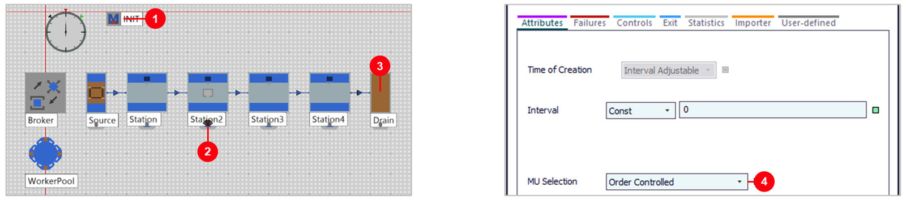
- 1
INIT:Source.OrderParts(.MUs.Part, 1, Station)Method ชื่อ Init ทำงานเองตอนเริ่มรัน - 2คนงาน 1 คน ถือชิ้นงานเดินครบ 4 สถานี (ตอนนี้อยู่ Station2)
- 3
Drain › Controls › Entrance=INITชิ้นงานถึง Drain → สั่งชิ้นใหม่ 1 ชิ้น - 4
MU Selection=Order ControlledSource ปล่อยตามคำสั่งเท่านั้น
Frame Worker › Model_Worker_Method — Method INIT มีบรรทัดเดียว:
Source.OrderParts(.MUs.Part, 1, Station)INIT ถูกเรียกตอนเริ่มรัน และ Drain เรียกทุกครั้งที่ชิ้นงานเข้าขั้นที่ 8: Job Shop — เวลาและเส้นทางอยู่ในตาราง
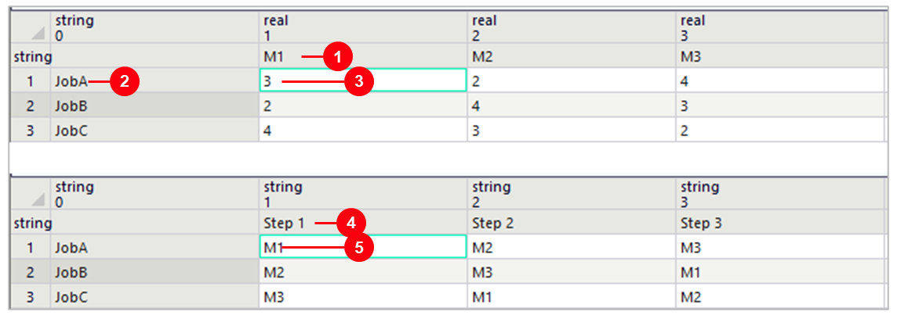
- 1คอลัมน์ M1 M2 M3 ชื่อเครื่อง (
List › Column Index) - 2แถว JobA JobB JobC ชื่องาน (
List › Row Index) - 3ค่า = นาที: JobA บน M1 = 3 นาที
- 4
Job_Queue: Step 1–3 ลำดับขั้นของแต่ละงาน - 5ค่า = เครื่องที่ต้องไป: JobA: M1 → M2 → M3 · JobB: M2 → M3 → M1
Step_No (integer)ขั้นที่ 8 (ต่อ): Method 2 ตัว ใช้กับทุกเครื่อง
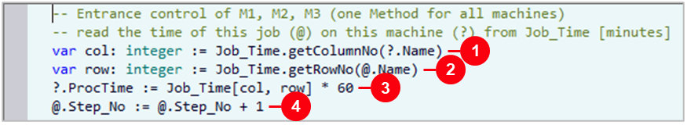
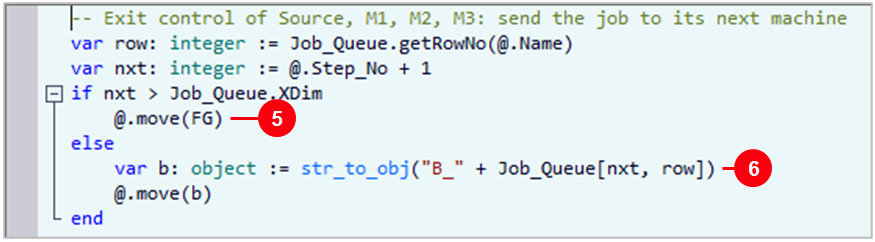
- 1
getColumnNo(?.Name)?= เครื่องที่เรียก (M1) → เลขคอลัมน์ - 2
getRowNo(@.Name)@= งาน (JobA) → เลขแถว - 3
?.ProcTime := … * 60นาทีในตาราง → วินาที - 4
@.Step_No + 1นับว่างานนี้ผ่านมากี่เครื่อง - 5ครบ 3 ขั้น →
@.move(FG)FG = Drain งานเสร็จ - 6
str_to_obj("B_" + เครื่องถัดไป)ข้อความ → object แล้วย้ายไป Buffer หน้าเครื่องนั้น
Method_In (Entrance ของ M1, M2, M3):
-- Entrance control of M1, M2, M3 (one Method for all machines)
-- read the time of this job (@) on this machine (?) from Job_Time [minutes]
var col: integer := Job_Time.getColumnNo(?.Name)
var row: integer := Job_Time.getRowNo(@.Name)
?.ProcTime := Job_Time[col, row] * 60
@.Step_No := @.Step_No + 1Method_Route (Exit ของ Source, M1, M2, M3):
-- Exit control of Source, M1, M2, M3: send the job to its next machine
var row: integer := Job_Queue.getRowNo(@.Name)
var nxt: integer := @.Step_No + 1
if nxt > Job_Queue.XDim
@.move(FG)
else
var b: object := str_to_obj("B_" + Job_Queue[nxt, row])
@.move(b)
end?.MUTarget ไฟล์บทเรียนใช้ @.move(b) ซึ่งตรงไปกว่า
· Method_Route ใส่ไว้ที่ Source ด้วย งานแรกจึงไปเครื่องแรกเองขั้นที่ 8 (ต่อ): ผล 8 ชั่วโมง — ไม่มี Connector ระหว่างเครื่อง
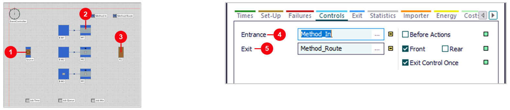
- 1
Source › Exit=Method_Routeส่งงานไปเครื่องแรกของงานนั้น - 2
M1·M2·M3ต่อ Connector แค่ Buffer → เครื่อง - 3
FG117 งาน ใน 8 ชั่วโมง - 4
Entrance=Method_Inเหมือนกันทั้ง 3 เครื่อง - 5
Exit=Method_Routeเหมือนกันทั้ง 3 เครื่อง
? คือเครื่องที่เรียก Method จึงอ่านเวลาของเครื่องนั้นเอง ·
M1 ทำงาน 73.8% · M2 73.8% · M3 74% (Source ปล่อย 120 งาน เสร็จ 117 ยังอยู่ในไลน์ 3)สรุป 9 Frame (PtS 2606)
| Frame | Method / คำสั่งหลัก | ผลวัดจริง |
|---|---|---|
| Model_Hello | print · var · if · for | Console: Hello, A > 4, 1–10 |
| Model_InOut | Entrance / Exit control · @ · ? · reset | 360 ชิ้น / ชม. · 360 แถว |
| Conveyor_Default | Exit Strategy = MU Attribute | A 258 · B 277 · C 222 |
| Conveyor_Method | Sensor + param SensorID + Checkbox | A 321 · B 284 · C 294 |
| Assembly_Object | AssemblyStation · DismantleStation | 4 Container จบ 3:47 |
| Assembly_Method | create · cont.move · waituntil · Exitlocked | 3 Container จบ 1:28 |
| Worker × 2 | Source.OrderParts ใน INIT | 61 ชิ้น / ชม. ทั้งสองแบบ |
| Model_JobShop | getColumnNo · getRowNo · str_to_obj | 117 งาน / 8 ชม. |
ทุกตัวเลขวัดจริงด้วยไฟล์ 07_Sim-Talk.spp ใน PtS 2606 — เรื่องของบทนี้: เมื่อหน้าต่าง object ทำไม่ได้
ใช้ Method + @ / ? ผูกกับ Control ของ object
ลองเอง: แก้ทีละค่าแล้วรัน
| Frame | ลองเปลี่ยน | ผล | ทำไม |
|---|---|---|---|
| Model_InOut | Method_In: z_uniform(5, 10) → (8, 12) | 358 ชิ้น · 99.2% | Station เกือบไม่ว่าง |
| Conveyor_Method | ปิด B ☐ (คลิกช่องให้เครื่องหมายถูกหายไป) | B 0 · Drain 594 | PartB วิ่งตรงไป Drain |
| Conveyor_Method | ปิด A B C ☐ ทั้งหมด | Drain 1,207 | ไม่แยกเลย |
| Model_JobShop | Source Interval 4:00 → 3:00 | 154 งาน · M1 97.9% | เกือบเต็มกำลัง |
| Model_JobShop | Source Interval 4:00 → 5:00 | 94 งาน · M1 58.8% | เครื่องว่างมากขึ้น |
| Model_JobShop | Job_Time JobA บน M1: 3 → 6 นาที | 116 งาน · M1 97.9% | M1 เป็นคอขวด |
ปัญหาที่พบบ่อย และวิธีแก้
| อาการ | วิธีแก้ |
|---|---|
| ชิ้นงานค้างใน Station ไม่ไปต่อ | Exit control ต้องจบด้วย @.move หรือ @.move(ปลายทาง) |
| Method ไม่ทำงานเลย | ยังไม่ได้กด Apply Changes หรือยังไม่ได้ใส่ชื่อ Method ในแท็บ Controls |
| Unknown identifier ตอนรัน | ชื่อ object สะกดไม่ตรง หรืออยู่คนละ Frame กับ Method |
| เปลี่ยนชื่อ Method แล้ว Control ไม่ทำงาน | Control จำชื่อเดิมไว้ ใส่ชื่อใหม่ในแท็บ Controls อีกครั้ง |
| โค้ดจากตำราเก่าขึ้น syntax error | เป็น SimTalk 1.0 (is / do, ;) แปลงตามตาราง 1.0 → 2.0 ในขั้นที่ 2 |
| โมเดลหยุดก่อนถึงเวลา End | ไม่มี Event เหลือ: ชิ้นงานไม่มีทางออก หรือ Buffer เต็ม (เกิดจริงกับโมเดล Assembly เดิม: หยุดที่ 60 และ 170 วินาที จนเพิ่ม Drain และเปิด Buffer ไม่จำกัด) |
ภาคผนวก: SimTalk Programming Blueprint — 14 หัวข้อ
ภาพรวมภาษา SimTalk 2.0 แบบแผนภาพ ใช้ทบทวนหลังทำครบ 8 ขั้น หรือเปิดดูระหว่างเรียน (โค้ดแก้เป็น SimTalk 2.0 แล้ว)
| หัวข้อ | หัวข้อ |
|---|---|
| 1. สถาปัตยกรรมของ Method Object | 8. กลไกการวนซ้ำ (Looping Mechanisms) |
| 2. โครงสร้างหลักของ Method (Syntax Anatomy) | 9. จุดกระตุ้นการทำงาน (Entrance & Exit Controls) |
| 3. ตารางสรุปตัวดำเนินการ (Operators Matrix) | 10. การระงับการทำงานชั่วคราว (Suspending Methods) |
| 4. การอ้างอิงตำแหน่ง (Paths & Namespaces) | 11. วงจรชีวิตของการจำลอง (Initialization & Reset Lifecycle) |
| 5. ตัวแปรอ้างอิงไม่ระบุชื่อ (Anonymous Identifiers) | 12. ระบบเฝ้าระวังด้วย Trigger (The Trigger Object) |
| 6. ตรรกะการตัดสินใจ (Branching Logic: If-Elseif) | 13. การควบคุมแกนกลางระบบ (Controlling the EventController) |
| 7. สถาปัตยกรรมทางเลือก (The Switch Statement) | 14. สถาปัตยกรรมบูรณาการ (System Synthesis) |
1. สถาปัตยกรรมของ Method Object
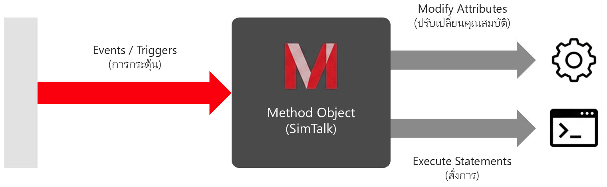
- Method คืออะไร: โปรแกรมขนาดเล็กที่ฝังตัวในระบบ (เทียบเท่า Procedure/Function ใน C++ หรือ Pascal) พัฒนาบนฐานของภาษา Eiffel
- บทบาทหน้าที่: ตอบสนองต่อเหตุการณ์ (Events) ระหว่างการจำลอง · อ่านและปรับเปลี่ยนคุณสมบัติ (Attributes) ของออบเจกต์ · ขยายขีดความสามารถและสร้างความยืดหยุ่นให้โมเดล
2. โครงสร้างหลักของ Method (Syntax Anatomy)
param x: integer
-> real
var total: real
total := x * 1.5
print total
return totalparam: รับข้อมูลจากผู้เรียก (Caller) พร้อมชนิดข้อมูล ไม่มีก็ไม่ต้องเขียน->: ชนิดของค่าที่ส่งกลับ ไม่ส่งค่ากลับก็ไม่ต้องเขียนvar: ประกาศตัวแปรภายใน ประกาศตรงไหนก็ได้ (เช่น integer, real, boolean)- statements : เขียนคำสั่งต่อได้เลย ไม่มี is / do / end
- บรรทัดละ 1 คำสั่ง : ไม่ต้องปิดด้วย
;(ใช้;เมื่อเขียนหลายคำสั่งในบรรทัดเดียว) return: จบ Method และส่งค่ากลับ
3. ตารางสรุปตัวดำเนินการ (Operators Matrix)
| กลุ่ม | ตัวดำเนินการ |
|---|---|
| Assignment (การกำหนดค่า) | := เช่น Buffer.Capacity := 8 |
| Arithmetic (คณิตศาสตร์) | + - * / · div (หารเอาส่วน) · mod (หารเอาเศษ/Modulo) |
| Relational (เปรียบเทียบ) | = (เท่ากับ) · /= (ไม่เท่ากับ) · > < >= <= ·
~= (ประมาณเท่ากับ) — Return value: Boolean |
| Logical (ตรรกศาสตร์) | and (จริงเมื่อทั้งคู่จริง) · or (จริงเมื่ออย่างน้อยหนึ่งจริง) · not (กลับค่าความจริง) |
4. การอ้างอิงตำแหน่ง (Paths & Namespaces)
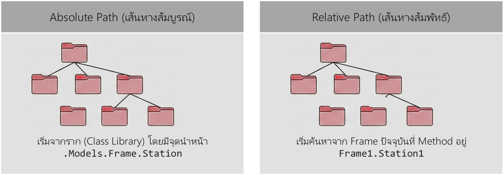
- Absolute Path: เริ่มจากราก (Class Library) โดยมีจุดนำหน้า เช่น
.Models.Frame.Station— ระบุเส้นทางเต็มจากราก ใช้อ้างอิงได้จากทุกที่ในโมเดล - Relative Path: เริ่มค้นหาจาก Frame ปัจจุบันที่ Method อยู่ เช่น
Frame1.Station1— ย้ายหรือคัดลอก Frame ได้โดยไม่ต้องแก้โค้ด
5. ตัวแปรอ้างอิงไม่ระบุชื่อ (Anonymous Identifiers)
| ตัว | ชื่อ | อ้างอิงถึง |
|---|---|---|
@ | The Trigger | ชิ้นงาน (MU) ที่เป็นตัวกระตุ้นให้ Method ทำงาน (เช่น @.move) |
? | The Caller | ออบเจกต์ที่เป็นเจ้าของ/เรียกใช้งาน Method นั้น |
self | The Method | ตัว Method ที่กำลังทำงานอยู่ (self.name คืนค่าเฉพาะชื่อ) |
current | The Location | Frame ปัจจุบันที่ Method นั้นตั้งอยู่ |
6. ตรรกะการตัดสินใจ (Branching Logic: If-Elseif)
ใช้สำหรับสร้างเงื่อนไขแยกสายการทำงานตามสถานะของออบเจกต์:
if @.quality = "good" then
@.move(station)
elseif @.quality = "minor-defects" then
@.move(rework)
else
@.move(scrap)
end7. สถาปัตยกรรมทางเลือก (The Switch Statement)
ลดความซับซ้อนของ If-Elseif ที่ซ้อนทับกันยาวเกินไป ทำให้โค้ดอ่านง่าย โครงสร้างสะอาด และง่ายต่อการปรับปรุง ระบบจะประเมินค่าเพียงครั้งเดียวแล้ววิ่งไปยัง case ที่ตรงกันทันที:
switch @.quality
case "good"
@.move(station)
case "minor-defects"
@.move(rework)
else
@.move(scrap)
end8. กลไกการวนซ้ำ (Looping Mechanisms)
| Loop | ทำงานอย่างไร |
|---|---|
| For Loop | วนซ้ำตามจำนวนรอบที่แน่นอน (ตัวนับ for var i วิ่ง to หรือ downto ปิดด้วย next) |
| While Loop | ตรวจสอบเงื่อนไข ก่อนทำงาน (อาจไม่ถูกรันเลยหากเงื่อนไขเป็นเท็จตั้งแต่ต้น) |
| Repeat-Until Loop | ทำงานก่อน 1 ครั้งเสมอ แล้วจึงตรวจสอบเงื่อนไขที่ท้ายลูป |
for var i := 1 to 10
...
next9. จุดกระตุ้นการทำงาน (Entrance & Exit Controls)
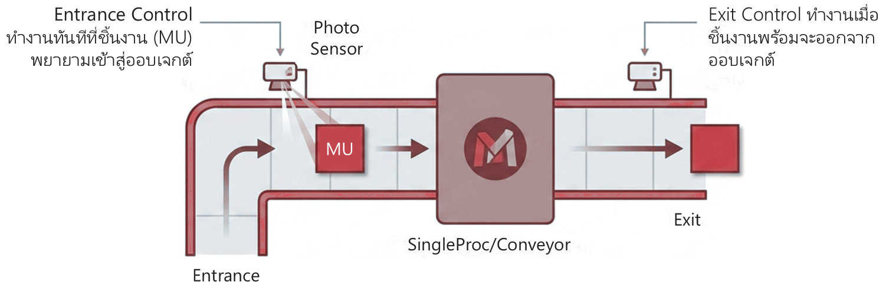
- Entrance Control ทำงานทันทีที่ชิ้นงาน (MU) พยายามเข้าสู่ออบเจกต์
- Exit Control ทำงานเมื่อชิ้นงานพร้อมจะออกจากออบเจกต์
- คำสั่งเคลื่อนย้ายหลัก:
@.move(เคลื่อนที่ตามสปีด) และ@.insert(ย้ายชิ้นงานทันที)
10. การระงับการทำงานชั่วคราว (Suspending Methods)
ใช้สำหรับหยุดโค้ดจนกว่าเงื่อนไขที่กำหนดจะเป็นจริง (พร้อมกำหนดค่า Priority):
waituntil Buffer.Empty prio 1| คำสั่ง | ลำดับ | หมายเหตุ |
|---|---|---|
waituntil (ปลอดภัยกว่า) | Method pauses → Condition met → Re-evaluates condition → Continues execution | ระบบจะประเมินเงื่อนไขซ้ำอีกครั้งก่อนกลับมาทำงาน (ใช้ในกรณีมีหลาย Method แย่งทรัพยากร) |
stopuntil | Method pauses → Condition met → Continues execution immediately (Bypasses re-evaluation) | ระบบจะไม่ประเมินเงื่อนไขซ้ำ ปลุก Method ให้ทำงานทันทีเมื่อเงื่อนไขเคยเป็นจริง |
11. วงจรชีวิตของการจำลอง (Initialization & Reset Lifecycle)
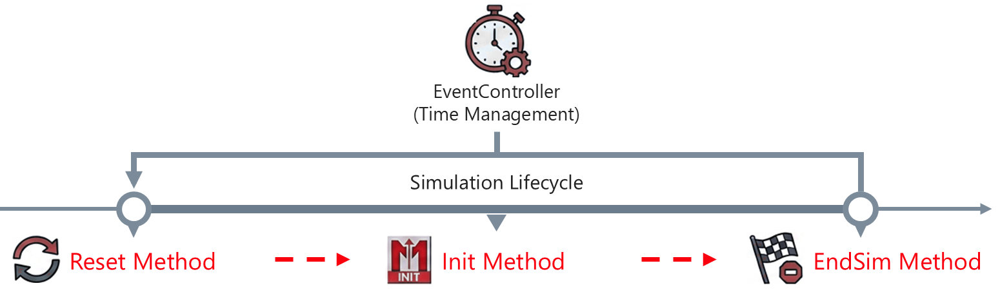
| Method | ทำงานเมื่อ |
|---|---|
| Reset Method | กดปุ่ม Reset ลบชิ้นงาน (MUs) ทิ้ง, รีเซ็ตเวลาเป็น 0, และเคลียร์สถิติ |
| Init Method | 1 ครั้งก่อนเริ่มจำลองจริง ใช้สำหรับตั้งค่าเริ่มต้น วางชิ้นงาน หรือกำหนดค่าตัวแปร |
| EndSim Method | อัตโนมัติเมื่อสิ้นสุดเวลาจำลอง (End Time) หรือเมื่อไม่มี Event เหลือในระบบ |
-- Method: reset
DeleteMovables-- Method: init
counter := 012. ระบบเฝ้าระวังด้วย Trigger (The Trigger Object)
ทำหน้าที่เสมือน PLC ขนาดจิ๋ว (Mini PLC) ในแบบจำลอง
- ไม่จำเป็นต้องรอให้มีชิ้นงานวิ่งผ่าน
- เฝ้าระวัง (Watch) การเปลี่ยนแปลงของคุณสมบัติ (Attributes) ใดๆ ตามคาบเวลาที่กำหนด (แท็บ Period: Active, Time reference, Repeat periodically, Period length)
- เมื่อค่าของ Attribute ตรงตามเงื่อนไข จะสั่งการให้ Method ทำงานโดยอัตโนมัติ (แท็บ Values: Trigger type)
13. การควบคุมแกนกลางระบบ (Controlling the EventController)
Method สามารถสั่งการ EventController เสมือนผู้ใช้งานกดปุ่มบนหน้าจอ: EventController.start ·
EventController.reset · EventController.init
SimTime: เวลาจำลองสัมพัทธ์absSimTime: วันและเวลาสัมบูรณ์ (Absolute Date/Time)
14. สถาปัตยกรรมบูรณาการ (System Synthesis)
- Method คือหัวใจของตรรกะการควบคุมทั้งระบบ
- Material Flow: ชิ้นงาน (MU) ไหลจาก Source ผ่าน Buffer, Conveyor และเครื่องจักร
- Information Flow: Method, Trigger และ EventController สั่งการทางตรรกะ
- Entrance/Exit Controls สั่ง
@.move/@.insert - Trigger เฝ้าระวังคุณสมบัติตามคาบเวลา
- Reset / Init / EndSim จัดการวงจรชีวิตการจำลอง
Method_In ตัวเดียวกัน แต่เวลาของแต่ละงานบนแต่ละเครื่องไม่เท่ากัน
Method รู้ได้อย่างไรว่าต้องใช้เวลาเท่าไร และถ้าอยากให้ JobA บน M1 ใช้ 6 นาทีแทน 3 นาที ต้องแก้โค้ดหรือไม่?
? คือเครื่องที่เรียก Method — Job_Time.getColumnNo(?.Name) ได้คอลัมน์ของเครื่องนั้น
และ @ คืองาน — getRowNo(@.Name) ได้แถวของงานนั้น จึงอ่านเวลาในตารางได้ถูกช่อง (คูณ 60 เป็นวินาที)
ไม่ต้องแก้โค้ด แค่แก้ตัวเลขในตาราง Job_Time — ผลวัดจริง: 116 งาน และ M1 ทำงาน 97.9% กลายเป็นคอขวด
(ดูหลักการหาคอขวดในบท 02)